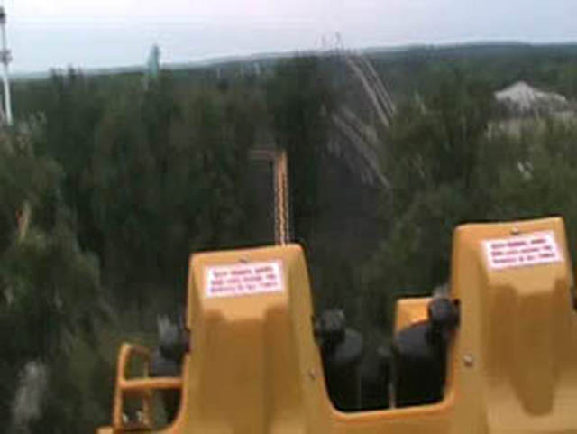

| |

Double Loop Review

For this review, we've traveled back in time to my visit to Geauga Lake. Anyways, after getting into the car and pulling down the shoulder harnesses, you are out of the station. You then go through this turn that is in a tunnel. It may have been cheap and sleazy, but it at least adds a little bit of spice to this otherwise blaten old boring turn to the lifthill. After seeing the light of day, you go up the lift hill. What a suprise. *Rolls Eyes* I forget anything special occuring on the lifthill, so I'll cut to the first drop. While it's not a super crazy first drop, it's still fun and brings the ride to a decent speed. After the first drop, we start to rise back up. We don't go up that high, and it's not that quick since you rise up at a very small angle. Keep in mind though, that this ride is not only dead, but was also built in the 70s. Then you slowly meander around a very big turn. Then you see the next drop you go through, as well as the two loops that follow it. The small drop is fun, but nothing special. And now here comes the part of the ride that gave the ride it's ever so creative name. The two vertical loops. We rise up 360 degrees as we flip upsidedown. While this was very blatent when I rode it in 2007, I'm sure this was an "OH MY GOD!!!" moment in the 70s. And to make it even more exciting for the 70s people, there's TWO loops! Two loops to make 70s people scream TWICE AS MUCH!!! Anyways, after those two loops, we rise up a little bit. Then we go through what looks like a pathetic attempt at a helix (It was really just a couple turns). While there was a little headbanging in this part, the rest of the ride was smooth as glass. Then after that, we bump up into the brake run. This ride however, is now scrap metal. So you will NEVER get to ride this ride again. But don't worry. You didn't miss much.
5/10
Location: Geauga Lake
Opened: 1977
Died: September 16, 2007
Built by: Arrow
Last Ridden: July 23, 2007
Double Loop Photos

|